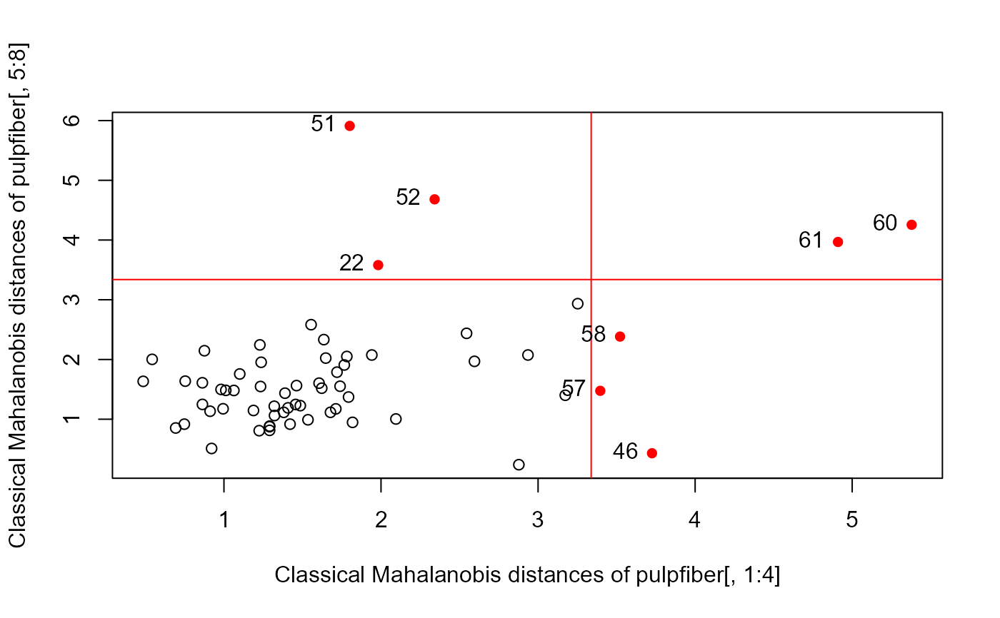
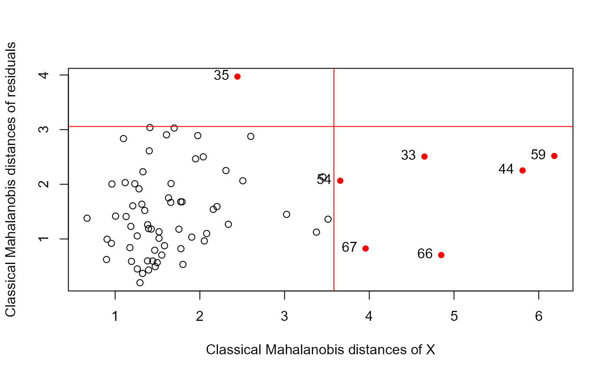

This plot, suggested by Rousseeuw & van Zomeren (1991), Rousseeu et al. (2004) typically plots Mahalanobis distances (\(D\)) of the Y response
variables against the distances of the X variables in a multivariate linear model (MLM).
When applied to a multivariate linear model itself, it plots the distances of the residuals for the Y variables
against the predictor terms in the model.matrix X.
This diagnostic plot combines the information on regression outliers and leverage points, and often more useful than either distance separately.
Usage
distancePlot(X, Y, ...)
# Default S3 method
distancePlot(
X,
Y,
method = c("classical", "mcd", "mve"),
level = 0.975,
ids = rownames(X),
pch = c(1, 16),
col = c("black", "red"),
label.pos = 2,
xlab,
ylab,
verbose = FALSE,
...
)
# S3 method for class 'formula'
distancePlot(X, Y, data, ...)
# S3 method for class 'mlm'
distancePlot(X, ...)Arguments
- X
A multivariate linear model fit by
lm, or a numeric data frame giving the predictors in the MLM- Y
A numeric data frame giving the responses in the MLM or the residuals
- ...
Other arguments passed to methods
- method
Estimation method used for center and covariance, one of:
"classical"(product-moment),"mcd"(minimum covariance determinant), or"mve"(minimum volume ellipsoid).- level
Lower-tail probability beyond which observations will be labeled.
- ids
Labels for observations
- pch
A vector of two point symbols, for the regular points and those beyond the cutoffs
- col
A vector of two colors, for the regular points and those beyond the cutoffs
- label.pos
Position of the label relative to the point; see
text- xlab
Label stub for horizontal axis
- ylab
Label stub for vertical axis
- verbose
Logical; if
TRUEprint the cutoff values to the console- data
For the formula method, the dataset containing the variables
Details
Observations with "large" distances on X or Y are labeled with their ids. The cutoffs are calculated as
\(\sqrt{\chi^2_{k, \text{level}}}\).
References
Rousseeuw P. J. & van Zomeren B. C. (1991). “Robust Distances: Simulation and Cutoff Values.” In W Stahel, S Weisberg (eds.), Directions in Robust Statistics and Diagnostics, Part II. Springer-Verlag, New York.
Rousseeuw, P. J., Van Driessen, K., Van Aelst, S., & Agullo, J. (2004). Robust multivariate regression. Technometrics, 46(3), 293–305. doi:10.1198/004017004000000329 .
Examples
if(require("robustbase")) {
# Examples from Rousseeuw etal (2004)
data(pulpfiber, package="robustbase")
# Figure 1
distancePlot(pulpfiber[, 1:4], pulpfiber[, 5:8])
# Figure 3
pulp.mod <- lm(cbind(Y1, Y2, Y3, Y4) ~ X1 + X2 + X3 + X4, data = pulpfiber)
distancePlot(pulp.mod, method = "mcd")
}
#> Loading required package: robustbase
#> 0.975 X, Y distance cutoffs: 3.338156 3.338156

#> 0.975 X, Y distance cutoffs: 3.338156 3.338156
# NLSY data
data(NLSY, package = "heplots")
NLSY.mlm <- lm(cbind(math, read) ~ income + educ + antisoc + hyperact,
data = NLSY)
distancePlot(NLSY.mlm)
#> 0.975 X, Y distance cutoffs: 3.338156 2.716203
# gives the same result
distancePlot(NLSY[, 3:6], residuals(NLSY.mlm), level = 0.975)
#> 0.975 X, Y distance cutoffs: 3.338156 2.716203
distancePlot(NLSY.mlm, method ="mve")
#> 0.975 X, Y distance cutoffs: 3.338156 2.716203
# distancePlot(cbind(math, read) ~ income + educ + antisoc + hyperact,
# data = NLSY)
# schooldata dataset
data(schooldata)
school.mod <- lm(cbind(reading, mathematics, selfesteem) ~ ., data=schooldata)
distancePlot(school.mod, cex = 1.5, cex.lab = 1.2)
#> 0.975 X, Y distance cutoffs: 3.582248 3.057516

data(Hernior)
Hern.mod <- lm(cbind(leave, nurse, los) ~
age + sex + pstat + build + cardiac + resp, data=Hernior)
distancePlot(Hern.mod)
#> 0.975 X, Y distance cutoffs: 3.801233 3.057516